Quick start - Problematic datasets
Alex Zizka
24 July 2018
qs_clean_dataset.RmdBackground
Some problems with biological collection data are not apparent from individual records, but rather linked to properties of an entire data set. The CleanCoordinatesDS function can use dataset properties to flag three types of potential problems, under the assumption that these problems will effect many records in a dataset from the same source (but not necessarily all): 1. An erroneous conversion of coordinates in degree minute annotation into decimal degrees, where the decimal sign is erroneously translated into the decimal delimiter, e.g. 10°30’ to 10.3 °. This is a problem that has been observed in particular for older data sets. 2. An over representation of zero decimals, as will occur if coordinates have been rounded to integer degrees 3. A periodicity in the decimals of a data set, as will arise when coordinates are either rounded or recorded in a raster format and coordinates represent raster cell centers.
Numbers 2 and 3 represent low precision rather than errors, but can also be fatal, if undetected and taken as actual localities, for example in distribution modelling.
Please find a detailed tutorial on how to clean occurrence records (e.g. from GBIF) here and how to clean fossil data (e.g. from PBDB) here.
Running clean_dataset
The clean_dataset function implements tests to identify these problems on a data set level. A data set can in this context can be any meaningful cluster of occurrence records, i.e from the same museum, or the same collector, etc. Output is a summary data.frame with summarizing flags for each test and dataset (note that you can change the level of detail in the output with the output flag). We generally recommend to double check the results, in particular of the periodicity test. IN general power of the test increases with data set size and geographic extent. The test can be made more conservative using the periodicity.thresh argument.
library(CoordinateCleaner)
## Registered S3 methods overwritten by 'ggplot2':
## method from
## [.quosures rlang
## c.quosures rlang
## print.quosures rlang
## Registered S3 method overwritten by 'dplyr':
## method from
## as.data.frame.tbl_df tibble
#Create test dataset
clean <- data.frame(dataset = rep("clean", 1000),
decimallongitude = runif(min = -42, max = -40, n = 1000),
decimallatitude = runif(min = -12, max = -10, n = 1000))
bias.long <- c(round(runif(min = -42, max = -40, n = 500), 1),
round(runif(min = -42, max = -40, n = 300), 0),
runif(min = -42, max = -40, n = 200))
bias.lat <- c(round(runif(min = -12, max = -10, n = 500), 1),
round(runif(min = -12, max = -10, n = 300), 0),
runif(min = -12, max = -10, n = 200))
bias <- data.frame(dataset = rep("biased", 1000),
decimallongitude = bias.long,
decimallatitude = bias.lat)
test <- rbind(clean, bias)
#run clean_dataset
flags <- clean_dataset(test)
## Testing for dd.mm to dd.dd conversion errors
## Warning in FUN(X[[i]], ...): Geographic span too small, check 'min_span'
## Flagged 0 records
## Testing for rasterized collection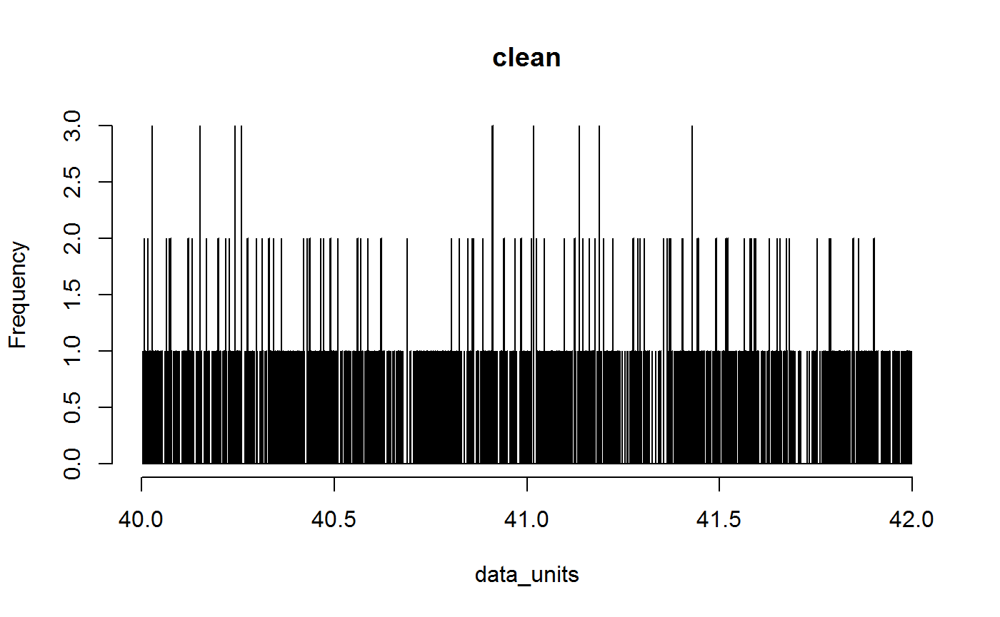 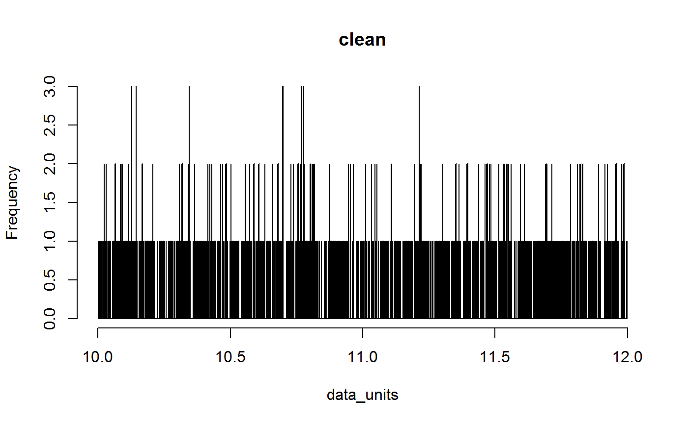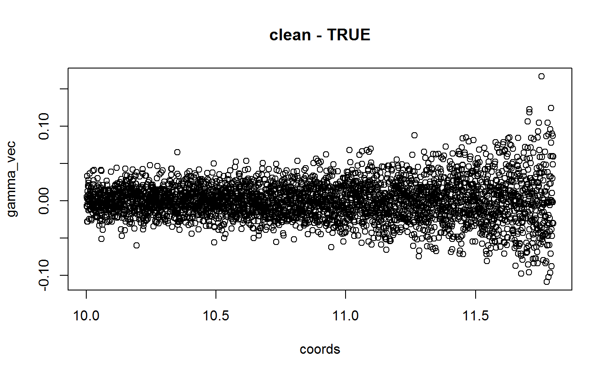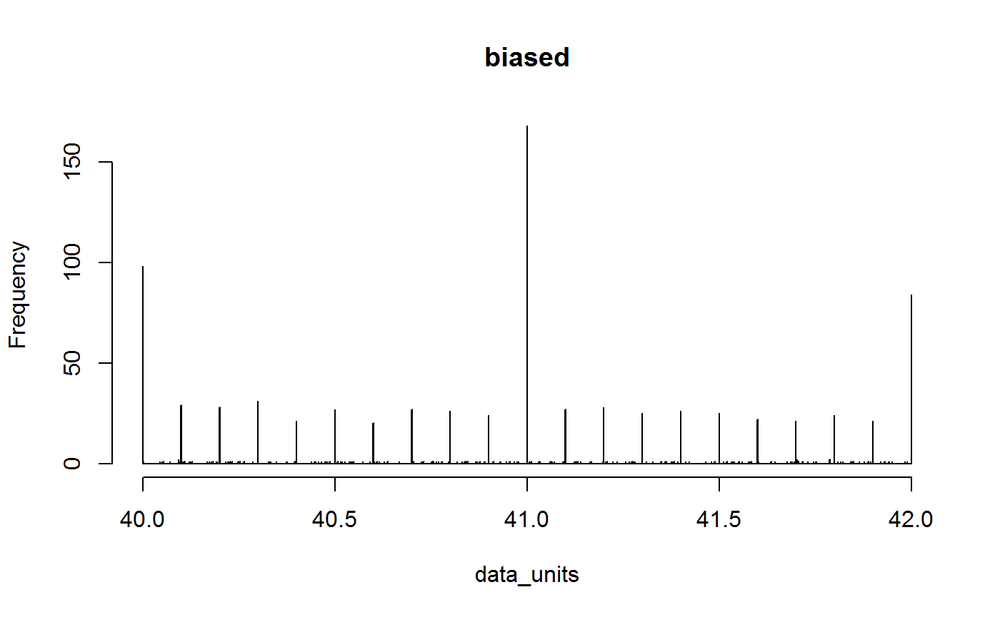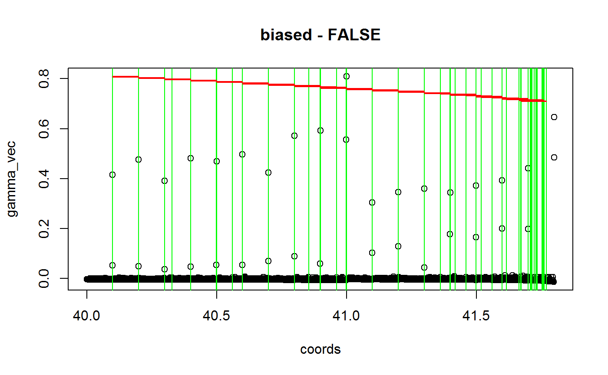
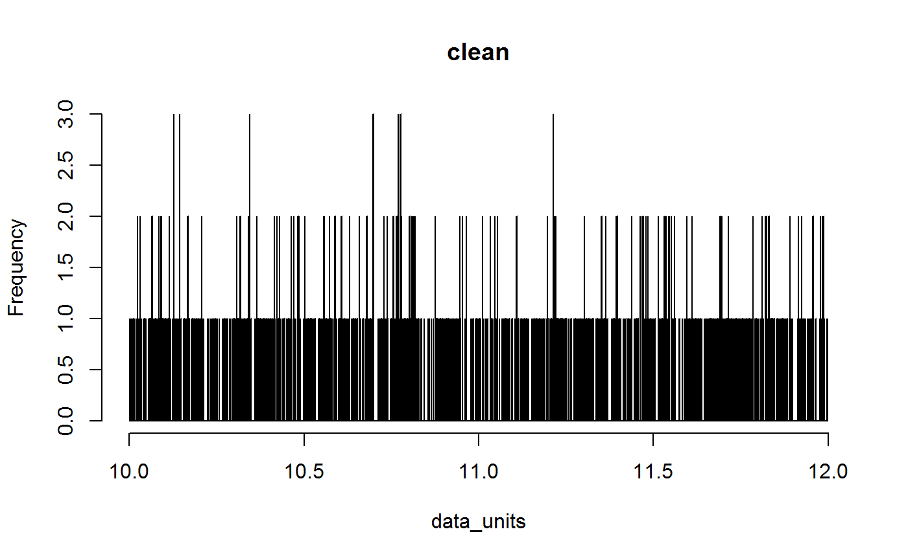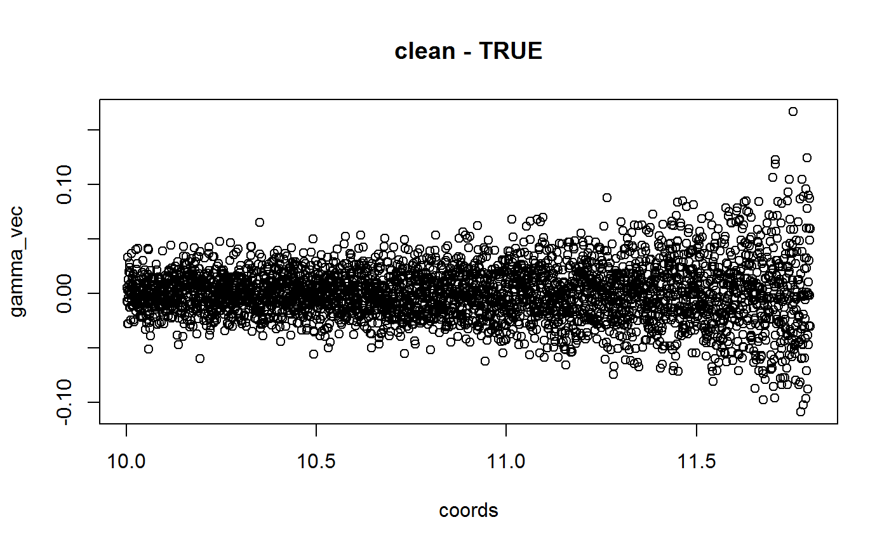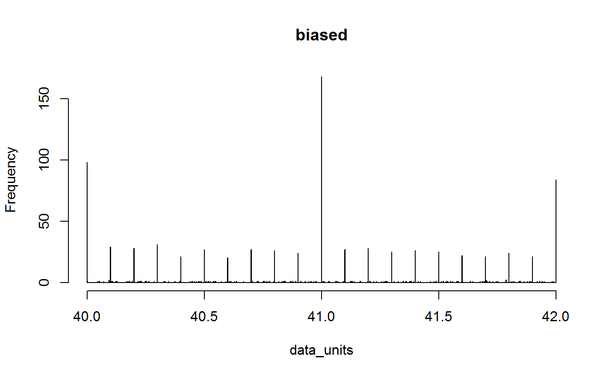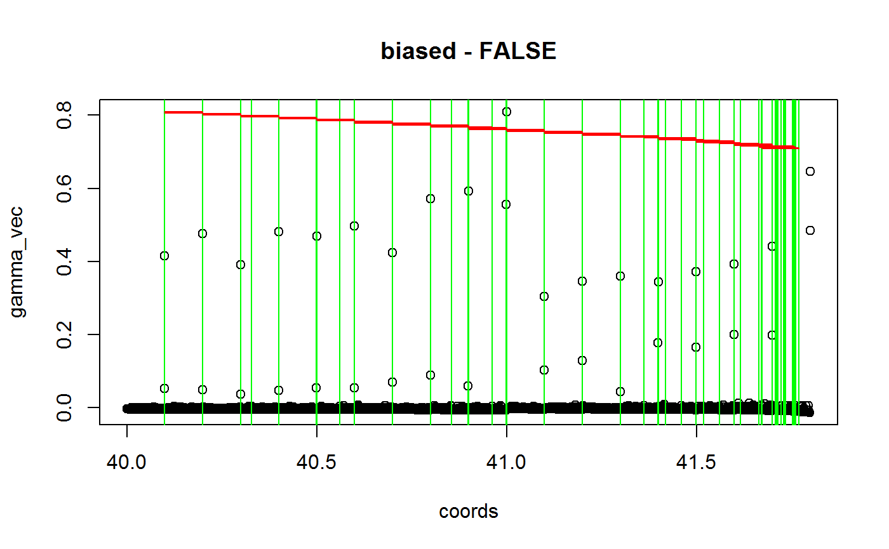
## Flagged 1 datasets.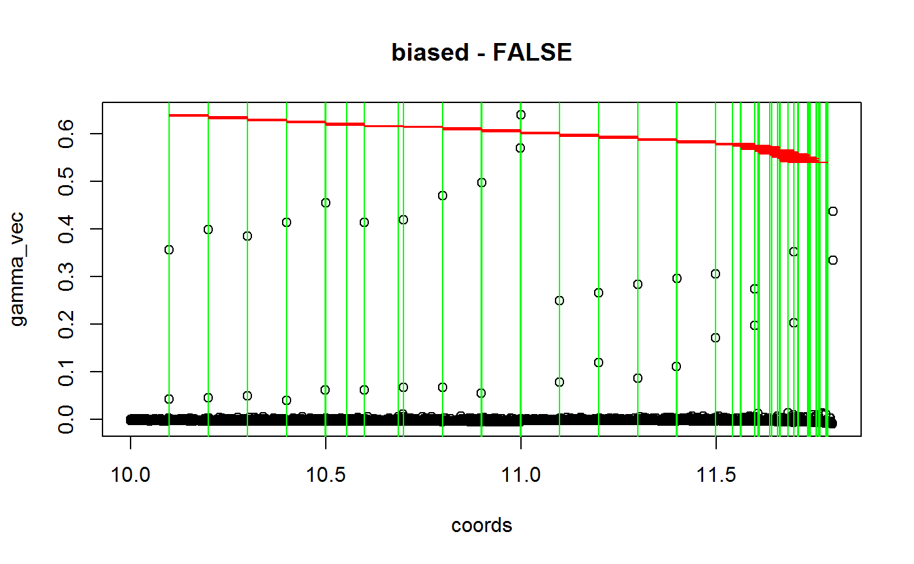
#check problems
#clean
hist(test[test$dataset == rownames(flags[flags$summary,]), "decimallongitude"])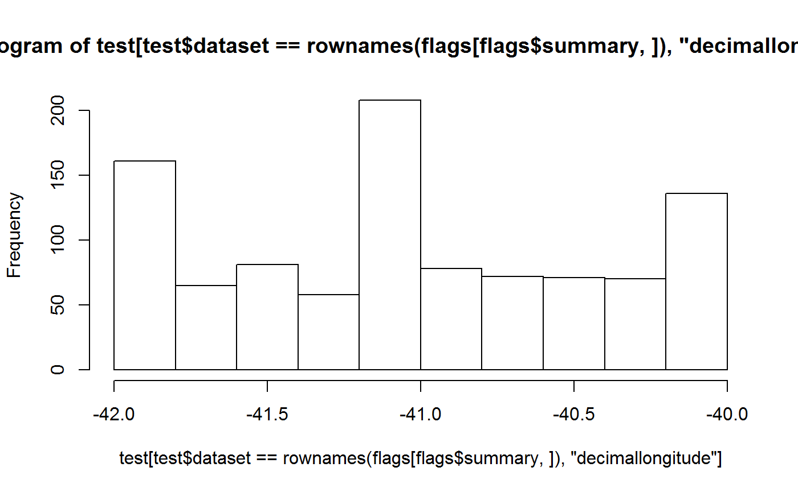
#biased
hist(test[test$dataset == rownames(flags[!flags$summary,]), "decimallongitude"])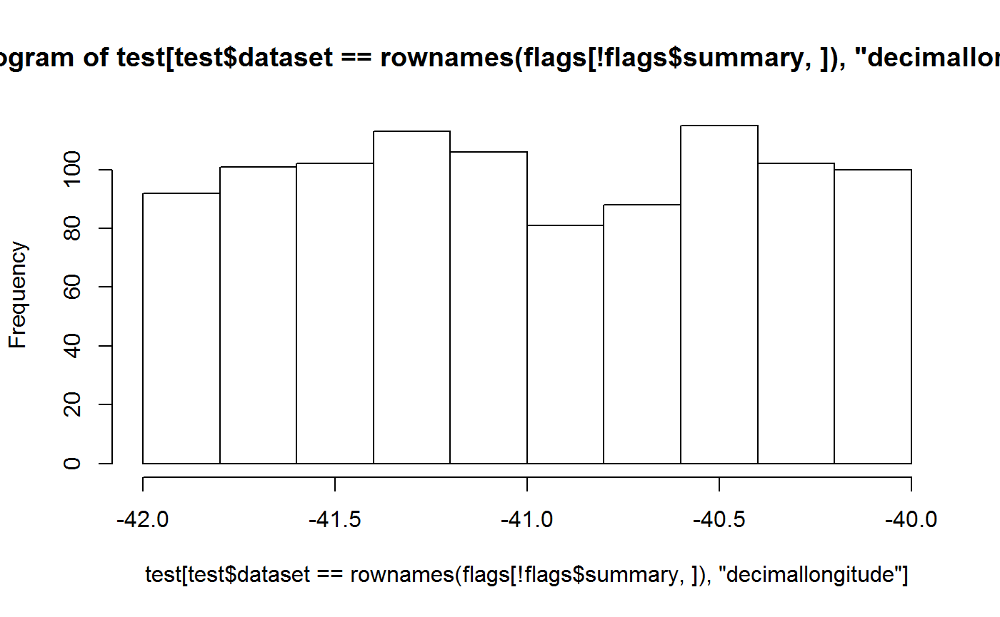